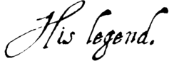
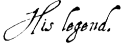

|
From 1245 to 1307
 The absence of accurate records prevents us from knowing Jacques de Molay's precise date and place of birth. Nevertheless, clues found throughout the trial minutes and archives of European kingdoms of the era suggest that de Molay was born around 1245 in Haute Saone in the County of Burgundy, then part of the Holy Roman Empire.
The absence of accurate records prevents us from knowing Jacques de Molay's precise date and place of birth. Nevertheless, clues found throughout the trial minutes and archives of European kingdoms of the era suggest that de Molay was born around 1245 in Haute Saone in the County of Burgundy, then part of the Holy Roman Empire.
In 1265, de Molay was received into the Order at Beaune by Humbert de Pairaud, Visitor of France and England, and by French Master Amaury de la Roche.
Around 1270, de Molay traveled to the East, where his activities remain unclear. It is not known whether he was among the survivors at Acre who managed to escape to Cyprus with Thibaud Gaudin – Grand Master of the Order at the time – but he did take part in a chapter formed on the island in the fall of 1291. He was elected Grand Master of the Order before April 1292, soon after Gaudin's death. From the time of his election, de Molay took care of urgent matters, forming a government and mounting a defense of both Cyprus and the kingdom of Little Armenia, the last Frankish possessions in the East.
In the spring of 1293, de Molay embarked on a long journey across Europe, during which he settled various difficulties confronting the Order. Most importantly, however, he sought assistance from both Western princes and the Church in defending the last Christian states. During this trip, de Molay solidified ties with several monarchs, such as Edward I of England, James II of Aragon and Pope Boniface VIII. He returned to Cyprus in the fall of 1296 to resolve problems having arisen from the ascent of King Henry II.
In 1298, de Molay mounted an expedition to Cilicia after the fall of Roche-Guillaume, the kingdom's final stronghold. Unfortunately, Christian forces were unable to capitalize upon the victory of Ghazan Khan of Persia over the Egyptian Mamluks in Homs in December 1299.
In 1300, de Molay continued to fortify the island of Arwad off the Tartous coast as an advanced base for joint operations with the Mongols. But the Mongols, bogged down by tribal wars, never managed to ally with the Christians against the Mamluks. In September 1302, the Templars of Arwad were massacred by the Mamluks. De Molay thus abandoned all hope of allying with the Mongols, which had proved to be an utter failure.
In 1305, newly elected Pope Clement V requested counsel from the Masters of the religious orders in preparation for a new crusade and as part of a plan to unify the orders. On June 6, 1306, Clement V officially summoned the order leaders to Poitiers, but due to the Pope's health, de Molay's audience did not take place until May 1307. As he had already informed the Pope previously, de Molay categorically refused the notion of uniting the various religious orders. This position would have grave consequences for the future of the Templar Order. To begin, the king of France took umbrage at this refusal, as it challenged his personal ambitions; it also poisoned negotiations between Clement V and Philip IV the Fair in their effort to taint the memory of Boniface VIII and hampered coordination of a new crusade. During his trip to the West, de Molay also uncovered slanderous rumors spread about the Templars. Philip the Fair and his advisors immediately pounced upon this vulnerability and came up with a plan to destroy the intransigent Order. On June 24, de Molay met with Philip the Fair in Paris to discuss accusations raised against the Order. Reassured by this meeting, de Molay returned to Poitiers, but asked the Pope to launch an investigation intended to rid the Templars once and for all of suspicion. On August 24, Clement V promised de Molay a commission of inquiry had been established. However, Philip the Fair decided to up the ante in an attempt to wrest the matter out of Pope Clement's hands. On September 14, with the help of Nogaret, Philip the Fair issued to his bailiffs and seneschals secret arrest warrants for all the Templars of the Realm and the confiscation of their possessions.
October 13, 1307: Arrest of the Templars
 The operation was conducted by Guillaume de Nogaret who, accompanied by soldiers, arrested all 140 of the Templars in Paris. Originally from Languedoc, de Nogaret was the king's legist. Meanwhile, on the eve of the arrests, Grand Master de Molay had served as pallbearer at the funeral of Princess Catherine, Titular Empress of Constantinople and wife of the Count of Valois.
The operation was conducted by Guillaume de Nogaret who, accompanied by soldiers, arrested all 140 of the Templars in Paris. Originally from Languedoc, de Nogaret was the king's legist. Meanwhile, on the eve of the arrests, Grand Master de Molay had served as pallbearer at the funeral of Princess Catherine, Titular Empress of Constantinople and wife of the Count of Valois.
Following the arrest of the Knights and their Grand Master, the fate of the entire Templar Order was tied to that of their renowned leader. It is known that the Order had been founded in 1118 by French crusaders with the expressed goal of protecting and defending pilgrims en route to the holy lands. The Knights' valor and distinction, their glory and purpose, earned their organization the highest reputation. Having solidified their status during the Council of Troyes (January 14, 1128), for two centuries the Templars obtained the privileges of Popes and gained the recognition of kings, the nobility and the people. By dint of their exploits, the Templars had become the richest and most powerful Christian order.
The Knights Templar certainly aroused even the envy of monarchs, for from their lofty perch it was unlikely that each and every leader or knight could maintain at all times and places the wise temperament necessary for preventing or disarming resentment and jealousy. To the Templars' dismay, the king of France had several reasons for finding fault with them, the main one perhaps being the paucity of the royal treasury, which excused him for resorting to the seizure and enjoyment of the order's vast riches.
As soon as the Grand Master and his fellow knights had been arrested at the Temple palace in Paris, the king seized the palace and stripped the knights of their possessions and wealth. The king confiscated the possessions of the other knights as well upon their mass arrest across France. Under immediate prosecution by the Inquisition, the Templars were subject to torture or the fear of being turned in. In almost every case, the knights were forced to confess to heinous crimes against nature, religion and morality; every form of coercion was used to gain confessions which served to justify the very measures taken to obtain them.…/…
    |